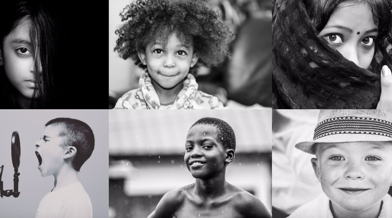
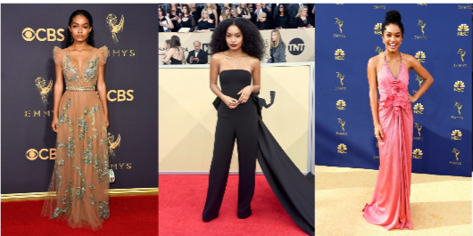
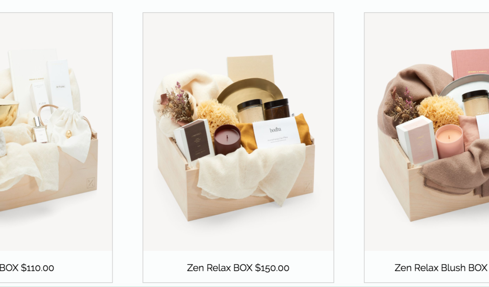
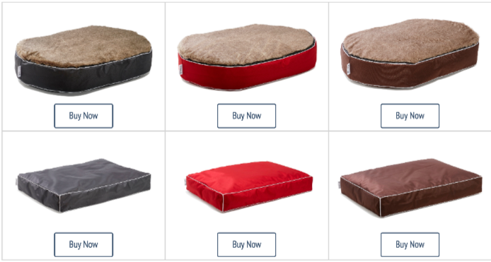

My Projects

-

BW LENS
This is a black and white
photography website. It was
design to showcase the
photographer broad spectrum
of work. I enjoyed designing
the layout of this website. -

HIPSTAR
MAGAZINEHipstar is a magazine publication
website. I design, code, and
created the concept for the
magazine while utilize my
Indesign and Photoshop skills. -

GIFT-A-BOX
Gift-A-Box is a online gifting
website I design and code.
This website was design for easy
navigation of customers,
and to give the products
available promient display. -

BUDDY BED
Buddy Bed is a redesign project.
Buddy bed is a dog bed line.
I collaborated with a Graphic
Designer to create. I did all the
code and the other designer did
the Photoshop graphic work.